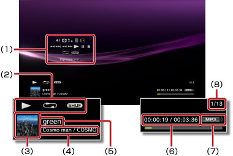

Música > Utilizando o painel de controle
Utilizando o painel de controle
Realize várias operações utilizando o painel de controle na tela. O painel de controle pode ser exibido ou ocultado pressionando o botão  .
.
Controle de volume

Ajusta o volume do conteúdo sendo reproduzido em  (Música). Você pode selecionar um dos nove níveis.
(Música). Você pode selecionar um dos nove níveis.
Dica
O som poderá ficar distorcido se o nível de saída do volume estiver alto demais. Se isto acontecer, abaixe o nível de saída do volume.
Reprodutor visual
Seleciona um dos vários fundos de tela a serem exibidos durante a reprodução do conteúdo.
Dica
Você não poderá alterar os fundos de tela do Reprodutor Visual quando o conteúdo  (Foto) ou
(Foto) ou  (Navegador de Internet) for exibido.
(Navegador de Internet) for exibido.
Adicionar à lista de reprodução
Adiciona o conteúdo sendo reproduzido a uma lista de reprodução.
Dica
Apenas os arquivos de música salvos no armazenamento do sistema podem ser adicionados a uma lista de reprodução.
Excluir
Exclui o conteúdo sendo reproduzido.
Dica
Apenas os arquivos de música salvos no armazenamento do sistema podem ser excluídos.
Mostrar
Exibe o status e outras informações durante a reprodução. Os itens de informação variam dependendo do conteúdo sendo reproduzido.

(1) |
Painel de controle |
|---|---|
(2) |
Ícone de status |
(3) |
Ícone da faixa |
(4) |
Nome do artista / nome do álbum |
(5) |
Nome da faixa |
(6) |
Tempo transcorrido da faixa / tempo total |
(7) |
Codec |
(8) |
Número da faixa / número total de faixas |
Anterior
Volta para o início da faixa atual ou para a faixa anterior.
Próximo
Avança para o início da próxima faixa.
Retrocesso rápido / Avanço rápido
Avanço ou retorno rápido do conteúdo sendo reproduzido. Ao pressionar e segurar o botão  , o conteúdo avançará ou retornará rapidamente, contanto que você mantenha o botão pressionado.
, o conteúdo avançará ou retornará rapidamente, contanto que você mantenha o botão pressionado.
Reproduzir
Inicia a reprodução do conteúdo.
Pausar
Pausa temporariamente a reprodução.
Parar
Para a reprodução.
Repetir
Reproduz o conteúdo repetidamente. Você pode selecionar um dos três modos de repetição pressionando o botão .
 |
Reproduz um item de conteúdo repetidamente. |
|---|---|
|
Reproduz todo o conteúdo repetidamente. |
| Sem exibição | Limpa a repetição de reprodução e reproduz todo o conteúdo em sequência. |
Aleatório
Reproduz o conteúdo em ordem aleatória.